Maple Hollow Elementary
School art for Rami’s approval. Claude places it afterward.
Every comparison uses the full unscaled 56×60 hero frame and native 1x art. Wide pieces scroll inside their own frame. The 2x links enlarge by a whole number with crisp edges.
Manifest · Validation · Method and placement notes
Pickup queue at 1x · Street and lane material at 1x
Existing yard-kit style
School subjects are new; these are style and scale references, not older versions of the same objects.
school-front
WALL · 1100 × 560 · 2x working painting
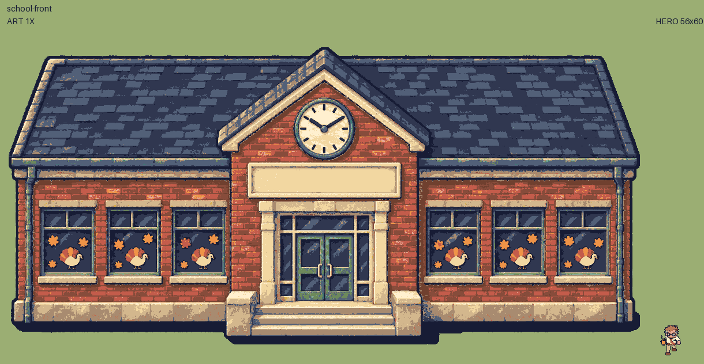
Sprite PNG · Inspect at 2x · Footprint overlay
flagpole
WALL · 48 × 256 · 3x working painting
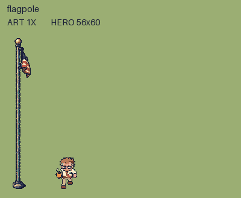
Sprite PNG · Inspect at 2x · Footprint overlay
school-sign
WALL · 256 × 128 · 3x working painting
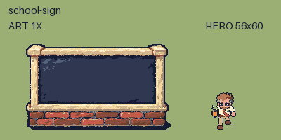
Sprite PNG · Inspect at 2x · Footprint overlay
pickup-lane
WALK-THROUGH · 512 × 1024 · 2x working painting
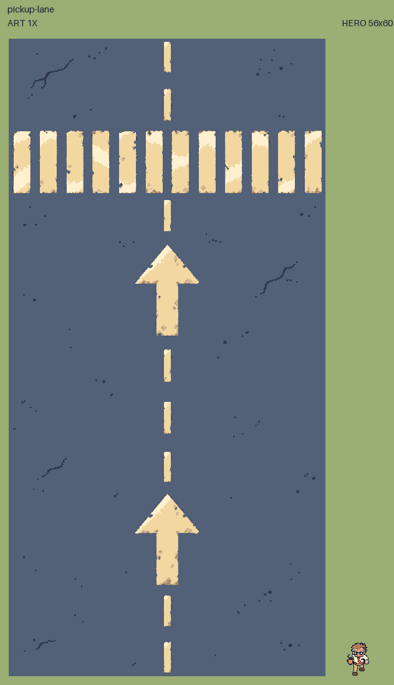
Sprite PNG · Inspect at 2x · Footprint overlay
minivan-a
WALL · 80 × 144 · 3x working painting
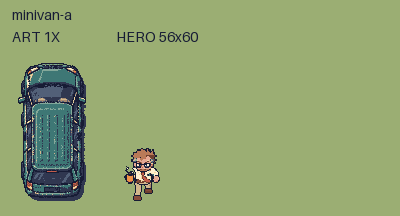
Sprite PNG · Inspect at 2x · Footprint overlay
minivan-b
WALL · 80 × 144 · 3x working painting
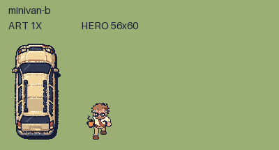
Sprite PNG · Inspect at 2x · Footprint overlay
pickup-suv
WALL · 80 × 144 · 3x working painting
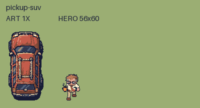
Sprite PNG · Inspect at 2x · Footprint overlay
playground-slide
WALL · 192 × 160 · 3x working painting
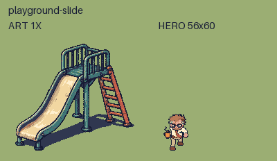
Sprite PNG · Inspect at 2x · Footprint overlay
monkey-bars
WALL · 224 × 128 · 3x working painting
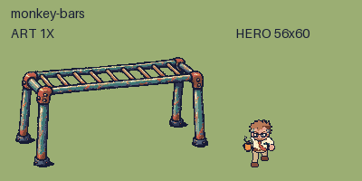
Sprite PNG · Inspect at 2x · Footprint overlay
merry-go-round
WALL · 160 × 128 · 3x working painting
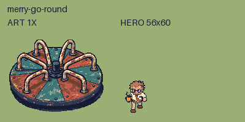
Sprite PNG · Inspect at 2x · Footprint overlay
four-square
WALK-THROUGH · 256 × 256 · 3x working painting
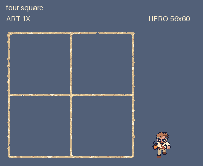
Sprite PNG · Inspect at 2x · Footprint overlay
hopscotch
WALK-THROUGH · 96 × 320 · 3x working painting
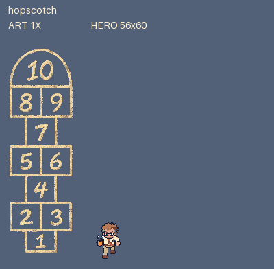
Sprite PNG · Inspect at 2x · Footprint overlay
usa-map
WALK-THROUGH · 320 × 224 · 3x working painting
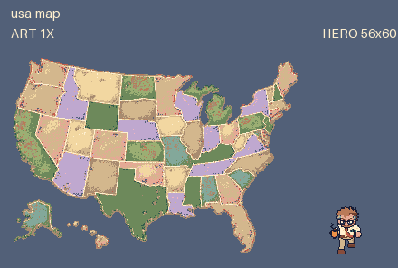
Sprite PNG · Inspect at 2x · Footprint overlay
bike-rack
WALL · 160 × 80 · 3x working painting
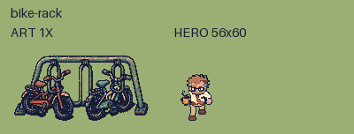
Sprite PNG · Inspect at 2x · Footprint overlay
lost-and-found
BREAKABLE · 64 × 64 · 3x working painting
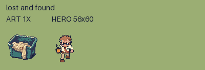
Sprite PNG · Inspect at 2x · Footprint overlay
Footprint overlays: red rectangles are collision proposals, cream is the feet line, orange marks the foot point. These annotations exist only in review images.
All footprints are art proposals. Runtime navigation, placement and depth sorting wait for approval and Claude’s integration.